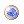

File list
Jump to navigation
Jump to search
This special page shows all uploaded files.
{kind=link}
{kind=link}
| Date | Name | Thumbnail | Size | User | Description | Versions |
|---|---|---|---|---|---|---|
| 01:47, 17 September 2015 | Stewan.png (file) | 3 KB | AloeLeaflet | 1 | ||
| 01:47, 17 September 2015 | Golfer.png (file) | 3 KB | AloeLeaflet | 1 | ||
| 01:47, 17 September 2015 | Stahor.png (file) | 3 KB | AloeLeaflet | 1 | ||
| 01:46, 17 September 2015 | Freshplant.png (file) | 941 bytes | AloeLeaflet | 1 | ||
| 01:36, 17 September 2015 | Pyrcla.png (file) | 3 KB | AloeLeaflet | 1 | ||
| 01:36, 17 September 2015 | Magflo.png (file) | 3 KB | AloeLeaflet | 1 | ||
| 01:36, 17 September 2015 | Graarm.png (file) | 3 KB | AloeLeaflet | 1 | ||
| 01:35, 17 September 2015 | Lavsli.png (file) | 3 KB | AloeLeaflet | 1 | ||
| 01:35, 17 September 2015 | Volash.png (file) | 3 KB | AloeLeaflet | 1 | ||
| 01:35, 17 September 2015 | Bigcell.png (file) | 623 bytes | AloeLeaflet | 1 | ||
| 01:28, 17 September 2015 | Eqc.png (file) | 3 KB | AloeLeaflet | 1 | ||
| 01:27, 17 September 2015 | Cbc.png (file) | 3 KB | AloeLeaflet | 1 | ||
| 01:27, 17 September 2015 | Tinbre.png (file) | 3 KB | AloeLeaflet | 1 | ||
| 01:27, 17 September 2015 | Stycha.png (file) | 3 KB | AloeLeaflet | 1 | ||
| 01:27, 17 September 2015 | Midfre.png (file) | 3 KB | AloeLeaflet | 1 | ||
| 01:27, 17 September 2015 | Silrus.png (file) | 3 KB | AloeLeaflet | 1 | ||
| 01:26, 17 September 2015 | Soncla.png (file) | 3 KB | AloeLeaflet | 1 | ||
| 01:26, 17 September 2015 | Bun.png (file) | 430 bytes | AloeLeaflet | 1 | ||
| 01:15, 17 September 2015 | Silbre.png (file) | 3 KB | AloeLeaflet | 1 | ||
| 01:14, 17 September 2015 | Liggen.png (file) | 3 KB | AloeLeaflet | 1 | ||
| 01:14, 17 September 2015 | Xensla.png (file) | 3 KB | AloeLeaflet | 1 | ||
| 01:14, 17 September 2015 | Oveboo.png (file) | 3 KB | AloeLeaflet | 1 | ||
| 01:14, 17 September 2015 | Eracut.png (file) | 3 KB | AloeLeaflet | 1 | ||
| 01:14, 17 September 2015 | Snowflower.png (file) | 466 bytes | AloeLeaflet | 1 | ||
| 00:56, 17 September 2015 | Sumleg.png (file) | 3 KB | AloeLeaflet | 1 | ||
| 00:56, 17 September 2015 | Paikil.png (file) | 3 KB | AloeLeaflet | 1 | ||
| 00:56, 17 September 2015 | Poimis.png (file) | 3 KB | AloeLeaflet | 1 | ||
| 00:56, 17 September 2015 | Neepar.png (file) | 3 KB | AloeLeaflet | 1 | ||
| 00:56, 17 September 2015 | Pudding.png (file) | 664 bytes | AloeLeaflet | 1 | ||
| 00:51, 17 September 2015 | Eirara.png (file) | 10 KB | AloeLeaflet | 1 | ||
| 00:51, 17 September 2015 | Serara.png (file) | 9 KB | AloeLeaflet | 1 | ||
| 00:49, 17 September 2015 | Bayera.png (file) | 16 KB | AloeLeaflet | 1 | ||
| 00:48, 17 September 2015 | Dieta.png (file) | 11 KB | AloeLeaflet | 1 | ||
| 00:48, 17 September 2015 | Elea.png (file) | 11 KB | AloeLeaflet | 1 | ||
| 00:48, 17 September 2015 | Eira.png (file) | 10 KB | AloeLeaflet | 2 | ||
| 00:47, 17 September 2015 | Sera.png (file) | 9 KB | AloeLeaflet | 2 | ||
| 00:42, 17 September 2015 | Sembryo.gif (file) |  | 262 bytes | AloeLeaflet | 1 | |
| 00:18, 17 September 2015 | Squest7.png (file) | 209 KB | AloeLeaflet | 1 | ||
| 00:18, 17 September 2015 | Squest6.png (file) | 261 KB | AloeLeaflet | 1 | ||
| 00:18, 17 September 2015 | Squest5.png (file) | 691 KB | AloeLeaflet | 1 | ||
| 00:18, 17 September 2015 | Squest4.png (file) | 321 KB | AloeLeaflet | 1 | ||
| 00:17, 17 September 2015 | Squest3.png (file) | 231 KB | AloeLeaflet | 1 | ||
| 00:17, 17 September 2015 | Squest2.png (file) | 217 KB | AloeLeaflet | 1 | ||
| 00:17, 17 September 2015 | Squest1.png (file) | 463 KB | AloeLeaflet | 1 | ||
| 00:13, 17 September 2015 | Mutatehomun.png (file) | 51 KB | AloeLeaflet | 1 | ||
| 00:02, 17 September 2015 | Redcondpot.png (file) | 457 bytes | AloeLeaflet | 1 | ||
| 23:50, 16 September 2015 | Menchange.png (file) | 1 KB | AloeLeaflet | 1 | ||
| 23:49, 16 September 2015 | Brainsurge.png (file) | 1 KB | AloeLeaflet | 1 | ||
| 23:49, 16 September 2015 | Emeescape.png (file) | 1 KB | AloeLeaflet | 1 | ||
| 23:49, 16 September 2015 | Healtouch.png (file) | 1 KB | AloeLeaflet | 1 |
{kind=link}